PAA
Polar Alignment Assistance (PAA)
If your mount supports Polar Alignment, you can use the Polar Alignment Assistant (PAA) to improve your alignment.
To start the polar alignment process, open the polar alignment assistance by clicking on PAA button.
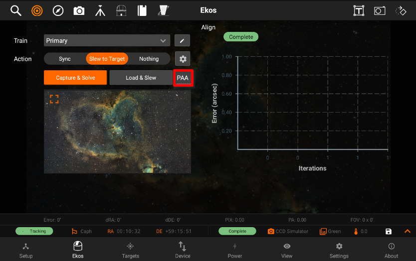
Use the Polar Alignment Settings to modify the settings.
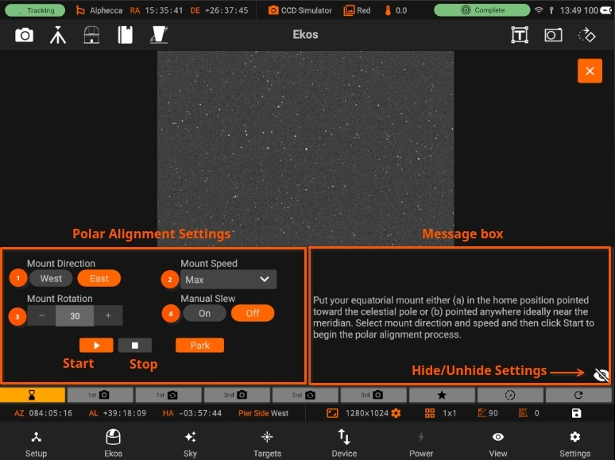
You can adjust the mount direction (1) by selecting West or East rotation. Adjusting the Mount Speed (2) by opening the speed menu and selecting the preferred rotation speed. Mount Rotation (3) allows the user to modify the amount of rotation the mount rotates after every capture. Manual Slew (4), the option to allow the user to manually rotate the mount after every capture and continue the process manually.
Set the preferred settings and follow the intstructions at each step to complete the process.
Idle
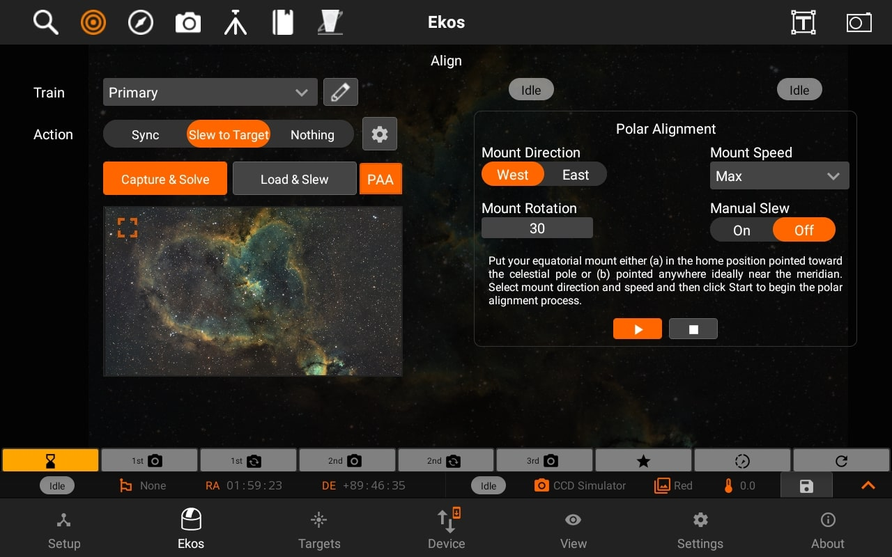
 First Capture
First Capture
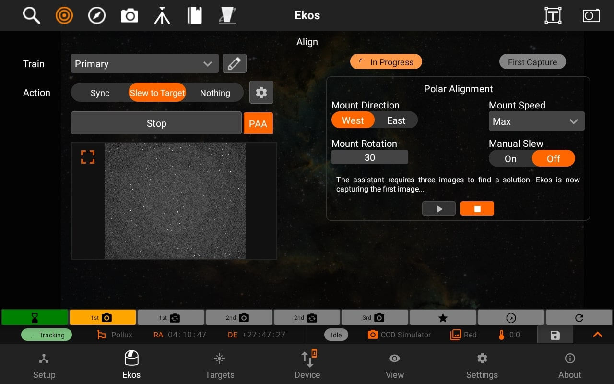
First Rotation
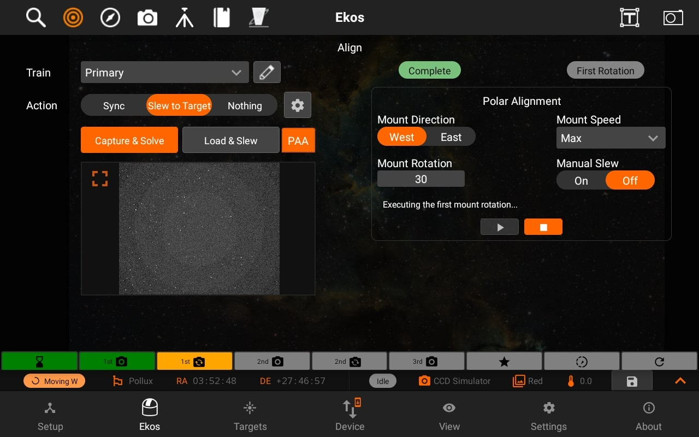
Second Capture
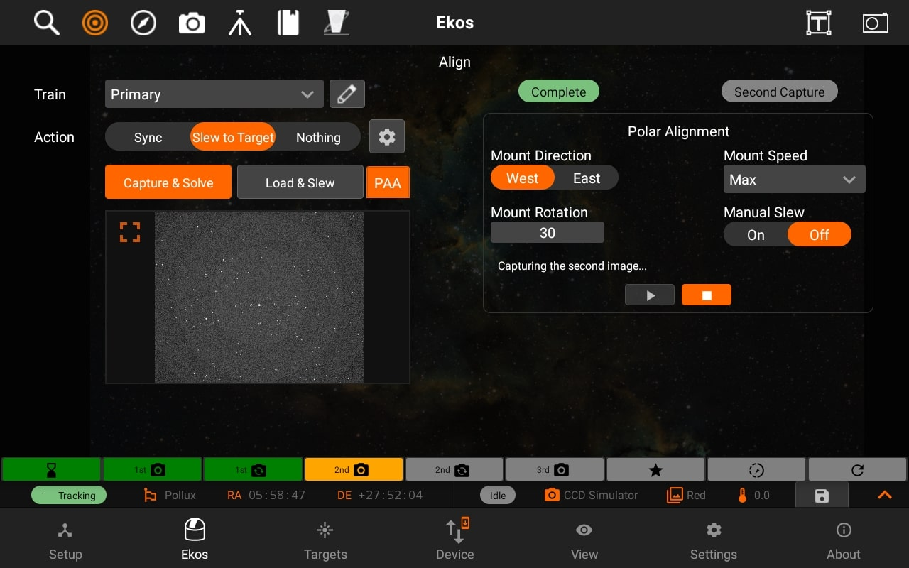
Second Rotation

Third Capture
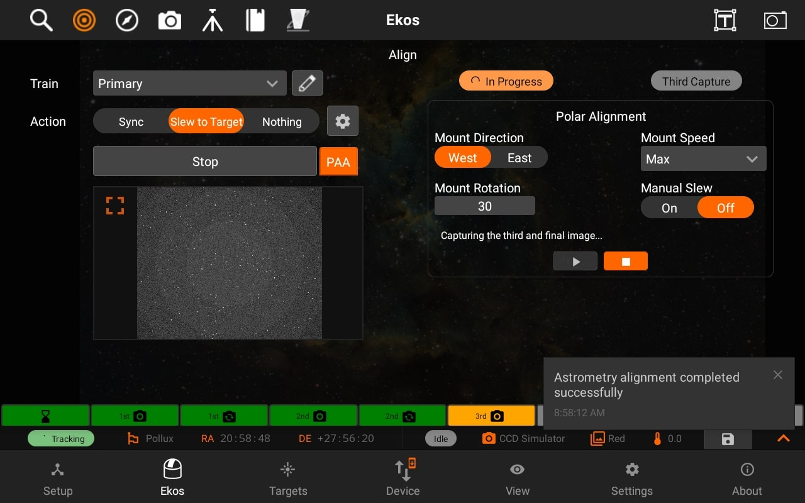
 Select Star
Select Star
Once all 3 images have been captures, you are shown the correction vectors. You can select a star to see the correction vectors relative to the selected star.
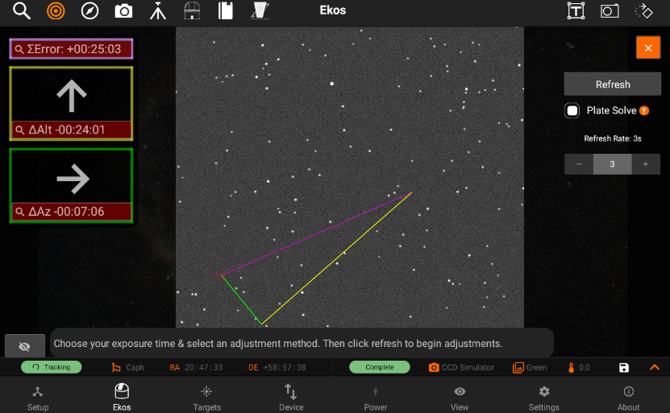
The correction vectors and screen will move to the selected position. At this stage you can use the pinch or spread gesture to use zoom in or out as shown. The zooming and tap features also works while the image is minimized.
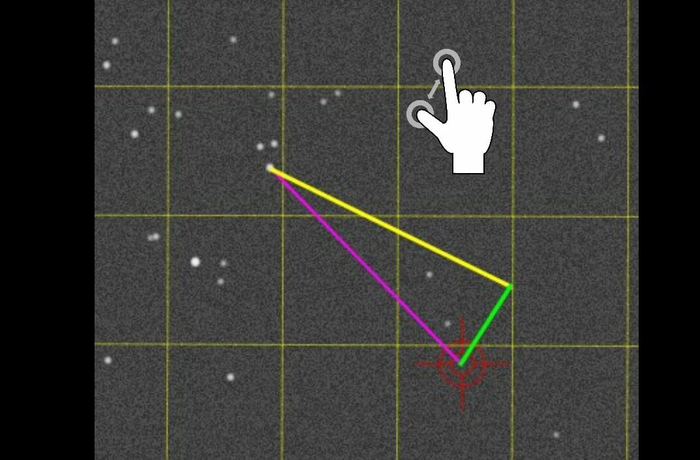
Select Refresh & Algorithm
In the Refresh Stage, the user can adjust the refresh rate by changing the input on the right side, pressing Refresh to start the process.
(Note: at this stage, the refresh only starts once Refresh is clicked)
There are two different algorithms you can choose for PAA:
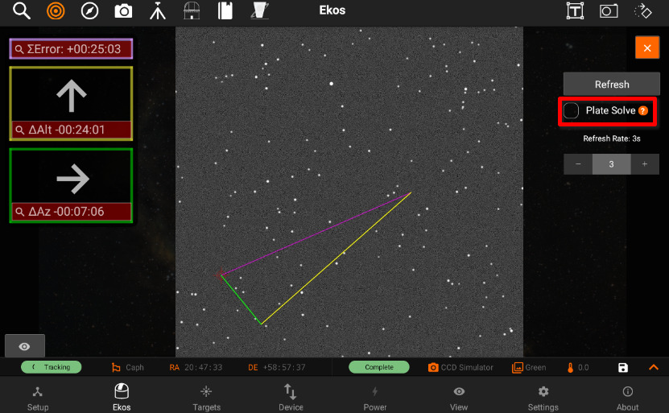
- Plate Solving: Uses plate solving to track what the corrected alignment error is during the refresh process . User should try reduce the error in the Updated error line below and minimize the size of arrows. This is the only scheme that can fully correct an error larger than the image field-of-view, but depends on reliable plate solving.
If Plate solve is unchecked, "Move Star & Calc error" Algorithm is used.
- Move Star and Calc error: Like Move Star, but Ekos attempts to track the star being moved and estimates the current alignment error when it can.
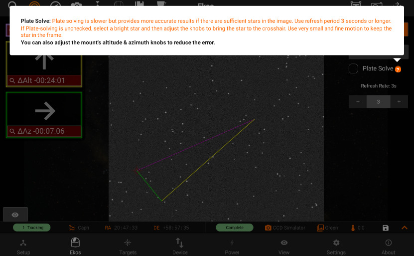
Refreshing
Refreshing begins and can still be adjusted using the slider. Once done with Polar Alignment, simply press the Done button.
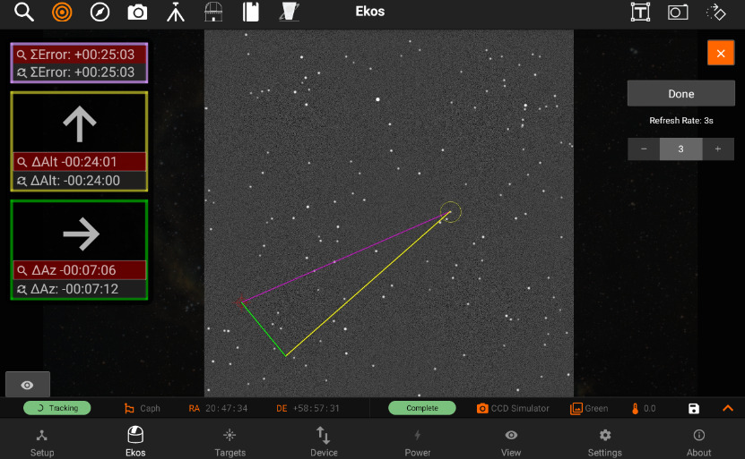